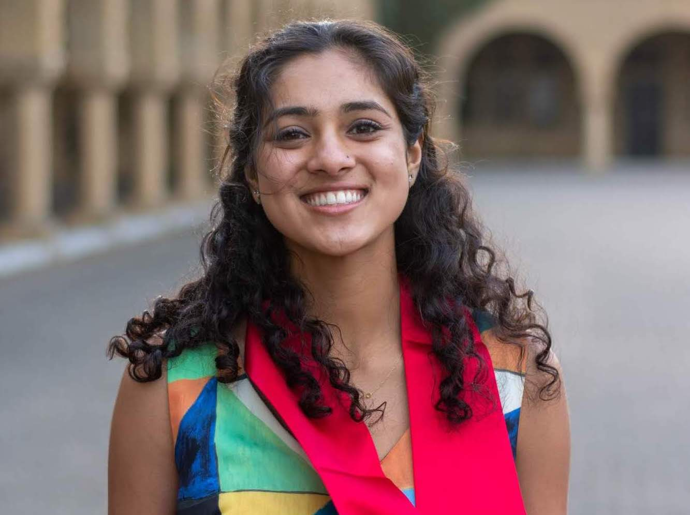
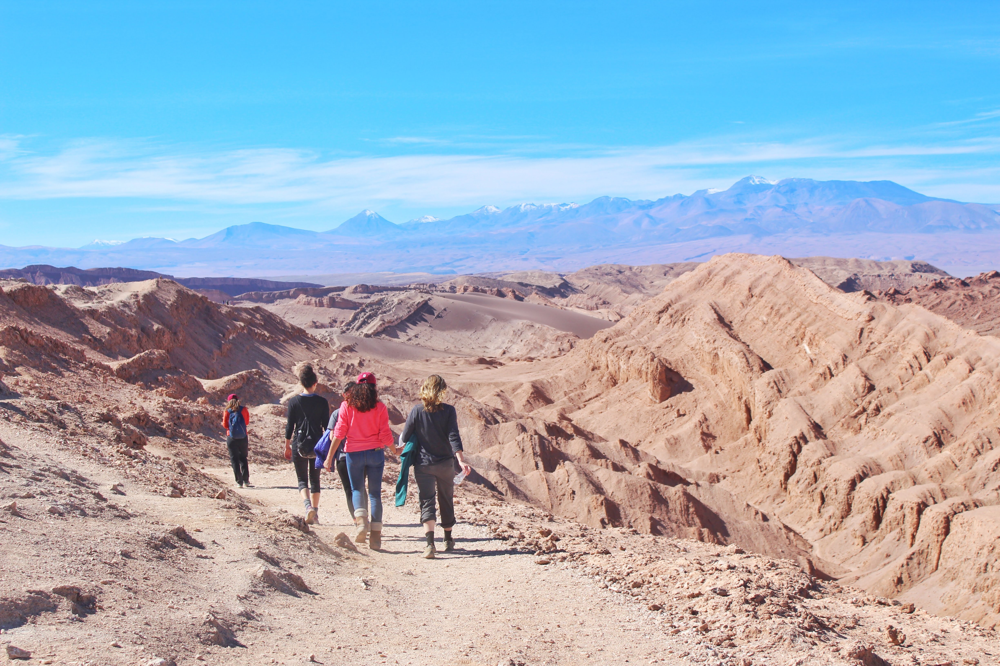

Education
Stanford University | Class of 2020
B.S. Computer Science - Artificial Intelligence
South Asian Studies Minor

 Experience
ExperienceTwitter | Software Engineering Intern, June - Sept 2019
Google | Engineering Practicum Intern, June - Sept 2018
Guante y Gacel (Santiago, Chile) | Data Science Intern, March - June 2018
Infosys (Bangalore, India) | Software Engineering Intern, July - Sept 2017
- Automated accessibility testing of Android mobile apps.
- Led a coding workshop for nearby elementary students.

Community and Political Organizing
LA
Helping Hands | Co-Founder, March 2020 - Present
Voter Empowerment Project | Organizer & Technical Project Lead,
Nov 2019 - Present
- Started a mutual aid group to match seniors and high-risk individuals
with nearby volunteers and virtual companions.
with nearby volunteers and virtual companions.
Voter Empowerment Project | Organizer & Technical Project Lead,
Nov 2019 - Present
- Provided volunteer technical assistance to BIPOC-led voting rights group.
Marquita Bradshaw for US Senate | Bluebonnet Data Fellow,
Aug 2020 - Nov 2020
They See / Desi Blue | Youth Leadership Council, June 2020 - Present
Aug 2020 - Nov 2020
- Used campaign and Tennessee Secretary of State data to target precincts
for phone banking, map yard sign requests, and automate intake processes.
for phone banking, map yard sign requests, and automate intake processes.
They See / Desi Blue | Youth Leadership Council, June 2020 - Present
- Helped mobilize South Asian Dems & increase
Twitter follower count by 200%.
Student Leadership & Activities
Haas Center for Public Service |
Public Interest Tech Student Assistant,
Oct 2019 - Sept 2020
CS + Social Good | Fellowships Co-Lead, Nov 2019 - Sept 2020
East Palo Alto Stanford Academy | Student-Mentor,
Sept 2016 - June 2020
Oct 2019 - Sept 2020
- Created post-grad fellowship roles at tech nonprofits & govt agencies.
- Organized public interest tech career newsletters, panels, & events.
- Organized public interest tech career newsletters, panels, & events.
CS + Social Good | Fellowships Co-Lead, Nov 2019 - Sept 2020
- Interviewed and matched 8 students to summer fellowships.
- Co-taught a student-led course on "Coding for Social Good".
- Co-taught a student-led course on "Coding for Social Good".
East Palo Alto Stanford Academy | Student-Mentor,
Sept 2016 - June 2020
Bing Overseas Studies Program |
Santiago & Co-Lead Student Ambassador,
Sept 2018 - June 2020
West Lag Dorm | Residential Computer Consultant, Sept 2018 - June 2019
Visitor Information Services | Campus & d.School Tour Guide,
Apr 2017 – Dec 2018
Sept 2018 - June 2020
- Curated ditigal marketing content for all programs.
- Presented training and awareness on microaggressions abroad.
- Presented training and awareness on microaggressions abroad.
West Lag Dorm | Residential Computer Consultant, Sept 2018 - June 2019
- Managed dorm technology & supported residents' wellbeing.
- Co-taught CS 1C: "Introduction to Computing" to 30+ students.
- Co-taught CS 1C: "Introduction to Computing" to 30+ students.
Visitor Information Services | Campus & d.School Tour Guide,
Apr 2017 – Dec 2018